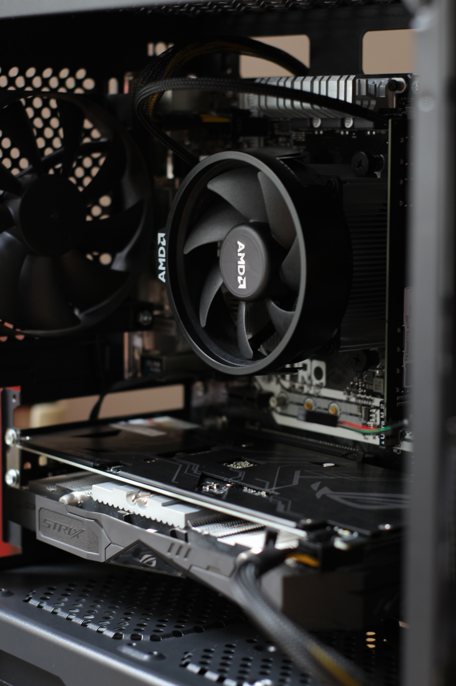
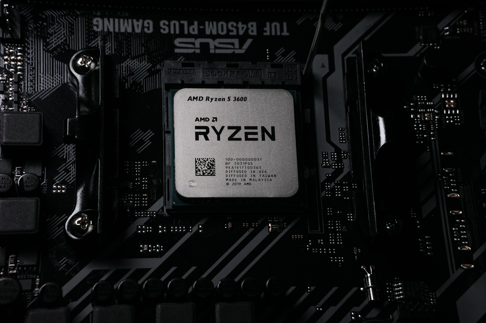
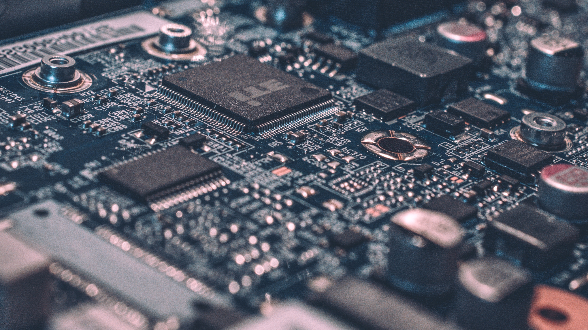

How to Build a Gaming PC
Find out how to build a gaming PC with Crucial. From the parts you need, to building a gaming PC on a budget, check it out now on our website.
The component of a computer system that controls the interpretation and execution of instructions. The CPU of a PC consists of a single microprocessor, while the CPU of a more powerful mainframe consists of multiple processing devices, and in some cases, hundreds of them.
The primary difference between a CPU and GPU is that a CPU handles all the main functions of a computer, whereas the GPU is a specialized component that excels at running many smaller tasks at once. The CPU and GPU are both essential, silicon-based microprocessors in modern computers.
Memory is the electronic holding place for the instructions and data a computer needs to reach quickly. It's where information is stored for immediate use. Memory is one of the basic functions of a computer, because without it, a computer would not be able to function properly.
3 Common PC Setup Categories
Get knowledge on most curated PCs that are designed for your needs.
These types of PCs are built for competitive gaming with room for upgrades.
These are built for simultaneous streaming and gaming.
These PCs are mostly built for professional content creation.
PC Peripherals You Want to Consider
What Does Peripheral Mean? A peripheral is any computing device or equipment that is part of the computer but doesn't perform any core computing process. It is an externally or internally connected device that adds up or complements the host computer's capabilities or functionality in some form.
The computer monitor is one of the most important parts of a computer system. It is the primary visual output device that displays images, text, video, graphs, etc. Computer monitors for homes come in different sizes, shapes, and styles but they all have certain functions in common.
RAM gives applications a place to store and access data on a short-term basis. It stores the information your computer is actively using so that it can be accessed quickly. The more programs your system is running, the more you'll need.
SSDs offers shorter boot times for your computer, more immediate data transfer, and higher bandwidth. Faster speeds mean SSDs can handle data at the ultra-speeds necessary in today's business world especially when running programs that access large amounts of data such as an operating system.
Useful PC Owner and Beginner Tips
Whether you're new to the world of PC gaming or looking to take your build to the next level, we've got all the advice in this cheat sheet.
- CPU (Central Processing Unit)
- MotherBoard
- Video Card/GPU (Graphics Processing Unit)
- Memory/RAM (Random Access Memory)
- Storage
- Cases
- PSU (Power Supply Unit)
- Uninstall unnecessary software.
- Limit the programs at the startup.
- Add more RAM to your PC.
- Check for spyware and viruses.
- Use Disk Cleanup and defragmentation.
- Consider a startup SSD.
- Take a look at your web browser.
Processor
Having a processor with more cores and a higher clock speed means that you can interact with more applications, more quickly. Good ratings in these fields are what makes your computer faster.